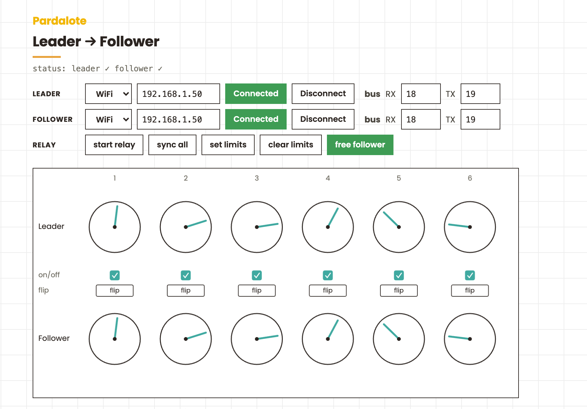

Teleoperate a robot arm by hand: move a leader arm and a second follower arm mirrors it live, joint for joint — the LeRobot leader/follower rig, in the browser across two boards.

Teleoperate a robot arm by hand. Move a leader arm and a second follower arm mirrors it live, joint for joint — the leader/follower setup from the LeRobot project, running entirely in the browser. Two boards, two arms, one web page.
The leader is free (torque off), so you back-drive it by hand; the browser streams its six joint positions to the follower, which holds and follows.
Bus wiring is the same as the Bus servos example: UNO R4 → Serial1 (D0/D1); ESP32 → set the pins with the bus RX/TX fields on the page.
Both boards run the same bus-servo firmware — upload File → Examples → Pardalote → bus-servos to each, and note the IP each reports. Nothing arm- specific lives on the board; the leader/follower logic is all in the browser.
This is a tool — no code editing. Open index.html and:
| Control | What it does |
|---|---|
| sync all | capture both arms' current positions as matched origins for every joint (press again to clear) |
| on/off (per pair) | the checkbox above each column excludes that joint pair from the system — its follower goes limp |
| flip (per joint) | mirror that joint — leader forward → follower backward |
| set limits | free the follower, hand-move it to record safe soft limits, press again to lock |
| free follower | release the follower's torque to pose it by hand |
| start relay | stream leader → follower |
Every setting is remembered per browser, so a return visit reconnects with one click.
Two boards means two Arduino instances — one connection each:
const leader = new Arduino();
const follower = new Arduino();
leader.connect('192.168.1.41');
follower.connect('192.168.1.42');
Six bus servos per arm. Each arm gets six BusServos, attached to IDs 1–6.
The leader is freed and polled so we get live positions; the follower is held:
for (let i = 1; i <= 6; i++) {
leader.add('L' + i, new BusServo());
follower.add('F' + i, new BusServo());
}
leader.on('ready', () => {
for (let i = 1; i <= 6; i++) {
const s = leader['L' + i];
s.attach(i, 'ST');
s.disableTorque(); // back-drivable — move it by hand
s.read(50); // stream its position ~20×/sec
}
});
The follower moves as a group. A group writes all six joints in one Feetech SyncWrite packet (one WebSocket message), so they move together instead of trickling in one at a time:
const arm = follower.group('arm', {
1: follower.F1, 2: follower.F2, 3: follower.F3,
4: follower.F4, 5: follower.F5, 6: follower.F6,
});
The relay copies the leader's live positions to the follower on a timer:
setInterval(() => {
const vals = {};
for (let i = 1; i <= 6; i++) vals[i] = leader['L' + i].position;
arm.write(vals); // one coordinated move
}, 50);
Sync and flip are just a per-joint remap. Each joint remembers a leader origin and a follower origin (captured when you toggle sync, or the servo centre otherwise), and the follower target is the leader's movement relative to that origin — optionally mirrored:
const delta = leaderPos - leaderOrigin;
const target = followerOrigin + (flip ? -delta : delta);
Because the target is relative to a matched origin, the arms don't need to be built or mounted identically — you line them up once, sync, and the offset cancels out.
setLimits(), so a relayed move can't
drive the follower past it.